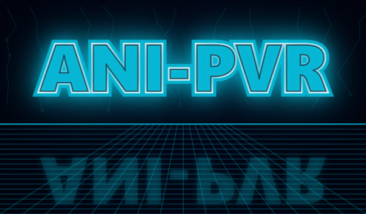
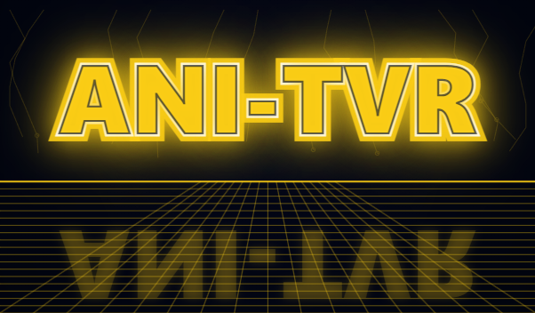

Interaction and interfaces
Controllers, hand tracking, locomotion, spatial UI and ways of manipulating objects in a virtual environment.
virtual reality · interaction · immersive worlds
Specialised teaching and project facilities for virtual and augmented reality — from the first prototype through interaction and 3D content to user validation.

From a headset to a working system
A good immersive application combines technology, space, interaction, 3D content, performance and user comfort. That is why we work across several areas.
Controllers, hand tracking, locomotion, spatial UI and ways of manipulating objects in a virtual environment.
Scene creation, optimisation, physics, data visualisation and applications built with Unity and Unreal Engine.
Usability, orientation, motion sickness, ergonomics and testing whether an immersive experience actually fulfils its purpose.
VR activities, consultations and equipment loans are organised in conjunction with ggLab. Specific devices and dates must be arranged in advance.
Hands-on teaching
Teaching combines a technical foundation, engine development, interaction design and a team project. The courses follow one another in the VCGD curriculum.

ANI-PVR · 5 ECTS
Advanced VR principles, interaction design, immersive application development and teamwork on an original project.
Current course page ↗
ANI-TVR · 5 ECTS
The technical foundations of displays, motion tracking, spatial sound, input devices and VR application development.
Current course page ↗Another path
BI-VHS combines building a team virtual world with game design principles and practical engine work.
BI-VHS on FIT Course Pages ↗Equipment and classroom
The specialised classroom supports larger groups. Additional ggLab headsets cover projects with different display, tracking and mobility requirements.
Capacity for shared hands-on teaching and parallel testing of student projects.
Headsets for demanding visualisation, high resolution and experiments requiring workstation performance.
HTC Focus 3, HTC Vive and Quest for mobile development, rapid prototyping and presentations outside the lab.
What is built in VR
Student work ranges from 3D scene editors and universal gestures to historical reconstructions and medical or scientific visualisation.
Student projects
Original VR applications, Unity tools, hand tracking, pixel streaming and experimental movement and manipulation techniques.
Continue through the VCGD curriculum →Open teaching
The specialised classroom also hosts workshops and courses where participants create their own 3D worlds, objects and avatars.
Summer VR course at FIT (Czech) ↗Project, teaching or equipment loan
Include the project's goal, platform or engine, required equipment and expected dates. We can help choose an appropriate workflow and facilities.